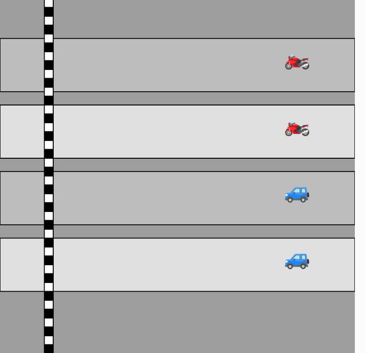

Meus Projetos


Estudante do Ensino Médio e Administração no Instituto Federal - Salto
Programadora iniciante com paixão por tecnologia, curiosidades científicas e criatividade.
Estou me desenvolvendo em Web (HTML, CSS, JavaScript) e possuo certificados em:
Além disso, gosto de ler, fazer crochê, praticar taekwondo, ir à academia, cozinhar e ouvir música.
Entre em contato comigo:
📧 camillesouzag15@gmail.com
📱 (11) 97841-1005